Матеріали Дентсплай Сірона · журнал «ДентАрт» 2019 №3
Адгезивні системи стоматологові-практику. Частина І
ADHESIVE SYSTEMS TO HELP THE DENTIST. PART I
Роман Попов,кафедра стоматології НМУ ім. О. О. Богомольця, стоматологічна клініка ARTSMILE (м. Київ, Україна)
Термін «Адгезивна стоматологія» нині дуже міцно закріпився в лексиконі лікарів-стоматологів. Причиною цього є повсюдне використання адгезивних систем – при прямій і непрямій реставрації зубів, у пародонтології при адгезивному шинуванні, ортодонти використовують їх для фіксації брекет-систем. Стоматологічний ринок насичений адгезивними системами від 4-го до 8-го поколінь (умовний розподіл), кожна з яких має свої переваги і недоліки, як і техніки, в яких вони застосовуються. Про адгезивні системи сказано і написано чимало, але прогрес не стоїть на місці, і виробники продовжують радувати нас новинками. У статті зроблено порівняння різних технік адгезивної підготовки, а також дано рекомендації щодо їх застосування.
Сьогодні композити є найбільш затребуваними реставраційними матеріалами. Високі естетичні властивості (широка кольорова гама, різний ступінь опаковості, полірованість) і характеристики міцності дозволяють використовувати їх на клінічному прийомі досить широко – від герметизації фісур до відновлення зубів зі значним ступенем руйнування. Природно, що непрямі реставрації, як правило, служать довше, ніж прямі, це зумовлено тим, що вони створюють мінімальний полімеризаційний стрес у зубах, які реставруються. Однак для виготовлення непрямої реставрації потрібна набагато більша редукція твердих тканин зубів, ніж при виконанні прямої реставрації. Іноді виникають ситуації, коли за клінічними показаннями необхідно відновити зуб за допомогою керамічної вкладки, але є якісь часові або фінансові обмеження. У випадках коректного використання композитних матеріалів (внесення, застосування технологій, що знижують стрес, наприклад SDR, правильна адгезивна підготовка і т. д.) та дотримання пацієнтом адекватного рівня гігієни ротової порожнини прямі реставрації можуть служити досить довго (фото 1, 2).
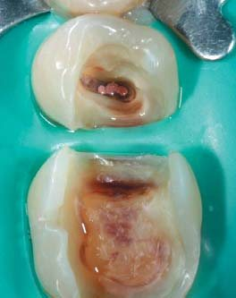
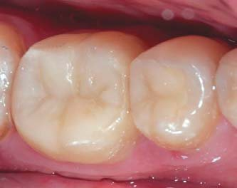
Колосальною перевагою прямих композитних реставрацій над непрямими є мінімально інвазивне препарування твердих тканин зубів, так зване дефектоорієнтоване препарування. У ситуаціях, коли без керамічних вкладок все-таки обійтися не можна, композити можна використовувати для підготовки порожнин, наприклад, усунення піднутрень, для мінімізації редукції твердих тканин.
У будь-якому випадку, який би вид реставрації ми не обрали, без адгезивних систем, або так званих бондингових агентів, відновити анатомічну форму, а відповідно і функцію зуба не було б можливим. Здавалося б, про адгезивні системи сказано і написано вже достатньо, але технічний прогрес, в тому числі і в адгезивній стоматології, не стоїть на місці, і виробники періодично радують нас усе досконалішими і досконалішими новинками.
Розвиток адгезивних систем
Основне завдання адгезивних систем (АС) – міцна безщілинна фіксація композитів до твердих тканин, що запобігає проникненню мікроорганізмів у напрямку пульпи й усуває потребу створення додаткових ретенційних пунктів у вигляді підрізів і додаткових майданчиків. Також адгезивні системи мають протистояти полімеризаційному стресу, щоб не виникало відривів по межі пломба – зуб. У тих ситуаціях, коли адгезивні системи не можуть протистояти полімеризаційному стресу (слабка сила адгезії) або було зроблено помилки на етапах адгезивної підготовки (пересушування чи, навпаки, надмірна вологість твердих тканин), виникає порушення крайового прилягання з подальшим забарвлюванням і проникненням мікроорганізмів (фото 3), що у свою чергу призведе до виникнення вторинного карієсу або «німого» некрозу пульпи.
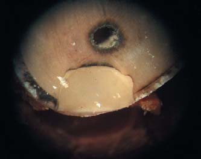
Що можемо зробити ми, стоматологи, для запобігання такому ускладненню? Перше – використовувати надійну адгезивну систему і провести коректну адгезивну підготовку, що буває зробити досить складно, особливо при застосуванні адгезивних систем тотального протравлювання. Друге – використовувати матеріали, які знижують полімеризаційний стрес, наприклад SDR, як основу реставрації. Цей матеріал завдяки своїй структурі дозволяє знизити величину стресу до 1,5 МПа.
З часів адгезивної концепції Buonocore, якій уже понад 60 років, адгезивні системи зазнали вельми серйозних еволюційних змін. Сьогодні стоматологи використовують адгезивні системи 5-ти поколінь, які відрізняються складом і особливостями клінічного застосування. Першими адгезивними системами, які досягли сили адгезії 27 МПа (більше, ніж сила з’єднання емалі з дентином на зсув), були 3-крокові адгезивні системи тотального протравлювання (4-е покоління). Однак велика кількість етапів при їх застосуванні та високі вимоги до ступеня вологості дентину призводили до помилок на етапі адгезивної підготовки (чим більше етапів, тим вища ймовірність зробити помилку). Наступні зусилля виробників були спрямовані на зменшення кількості етапів адгезії (рис. 1).
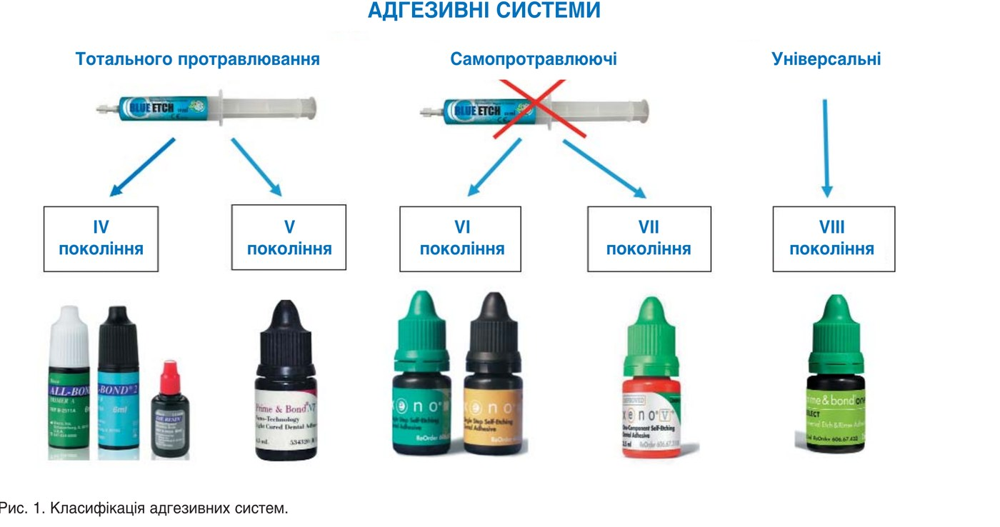
Адгезивні системи тотального протравлювання
Особливістю адгезивних систем тотального протравлювання (4 і 5 покоління) є етап протравлювання емалі та дентину гелем на основі ортофосфорної кислоти з концентрацією від 34 до 37%. Відрізняються АС 5-го покоління від 4-го тим, що у них праймер (гідрофільний дентинний адгезив) і бонд (гідрофобний емалевий адгезив) об’єднані в одному флаконі, що зменшило кількість етапів адгезивної підготовки, а відповідно, і кількість помилок. Помилки при використанні АС 4-го покоління часто були пов’язані з переплутуванням флаконів, в яких окремо містилися праймер і бонд.
Етап тотального протравлювання вимагає найсуворішого дотримання послідовності і часових норм. При протравлюванні емалі труднощів не виникає, і немає суттєвої різниці при ії протравлюванні протягом 15 чи 60 секунд. При протравлюванні емалі відбувається її демінералізація на глибину до 50 мкм з утворенням характерної мікрошорсткості (фото 4).
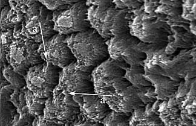
Протравлювання дентину завдає більше труднощів, бо він має більш гетерогенну структуру в порівнянні з емаллю і на його поверхні після препарування утворюється змазаний шар. Він являє собою частинки гідроксиапатиту, колагенових волокон, мікроорганізми і компоненти ротової рідини. Товщина змазаного шару залежить від техніки препарування, абразивності інструментів та інших моментів і в середньому становить 5-15 мкм.
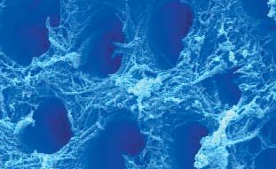
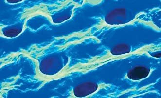
Протравлювання дентину має на меті прибрати власне змазаний шар, пробки змазаного шару і створити мікрошорсткість за рахунок демінералізації. Глибина демінералізації дентину в середньому становить 20-30 мкм, але дуже сильно варіює залежно від часу перебування ортофосфорної кислоти на його поверхні. Так, якщо у пацієнта є велика порожнина МОД, то витримати однакову експозицію на різних ділянках дентину неможливо – якісь ділянки будуть протравлюватися довше, якісь менше, що у свою чергу призведе до різної глибини демінералізації і, відповідно, до утворення нерівномірного гібридного шару.
Ще однією проблемою адгезивних систем тотального протравлювання є ступінь вологості твердих тканин. Після змивання протравлювального гелю і висушування емаль має бути сухою, матовою, а дентин – вологим, блискучим, іскристим, але в той же час на його поверхні не повинно бути «калюж». Домогтися ідеальної вологості дентину вельми проблематично, бо оцінка вологості значною мірою – суб’єктивний момент. Деякі лікарі пересушують дентин, що призводить до колапсу колагенових волокон (фото 6) і виникнення післяопераційної чутливості, інші ж, навпаки, недосушують, наслідком чого є надмірний надлишок вологи, а це перешкоджає адекватному проникненню адгезивної системи в дентин з утворенням тяжів гібридного шару.
Також у порожнинах великих розмірів і складної конфігурації проблематично добитися однакового ступеня вологості на різних ділянках порожнини (фото 7), а відтак якість гібридного шару в них буде істотно різнитися.
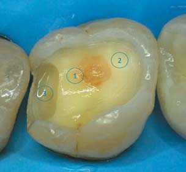
Не слід забувати того факту, що в навколопульпарному дентині дентинні канальці мають набагато більший діаметр, ніж у плащовому, що також позначається на вологості поверхні відпрепарованого зуба.
У таблиці 1 відображено структуру інтактного дентину і її зміну після протравлювання та гібридизації адгезивною системою (%).
| До протравлювання | Після протравлювання | Після праймування | |
|---|---|---|---|
| Апатити | 50 | 0 | 0 |
| Колаген | 30 | 30 | 30 |
| Вода | 20 | 70 | 30 |
| Смола | 0 | 0 | 40 |
З огляду на те, що праймер адгезивної системи повинен витіснити з дентинних канальців воду, яка в надлишку заміщає демінералізовані ділянки, Pashely і співавт.18 запропонували використання «спиртового протоколу» для поліпшення дентинної адгезії. Пізніше Marco Ferrari і співавт. провели дослідження, в ході яких не було доведено переваг цієї техніки у порівнянні з класичним «вологим бондингом», а збільшення кількості етапів адгезивної підготовки могло призводити до збільшення помилок на різних етапах.
При застосуванні адгезивних систем тотального протравлювання слід враховувати, який розчинник входить до їх складу, оскільки саме розчинник впливає на товщину адгезивного шару. Розчинниками можуть бути ацетон, спирт, вода, спирт – вода. Властивості розчинників у кінцевому підсумку істотно впливають на властивості адгезивних систем (рис. 2).
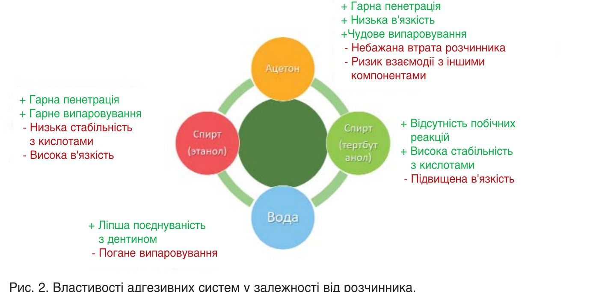
Слід пам’ятати, що однокомпонентні АС, будучи напівпроникними, після полімеризації пропускають з дентинних канальців на поверхню адгезивного шару транссудат, який буде перешкоджати приклеюванню першої порції гідрофобного композиту (фото 8). Тому після полімеризації таких АС для запобігання утворенню «водних дерев» всередині адгезивного шару і транссудату на його поверхні протягом 90 секунд потрібно внести тонку порцію текучого композиту і провести полімеризацію.
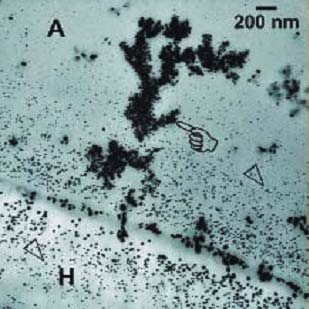
Складнощі, які виникають при використанні АС тотального протравлювання, особливо на етапах протравлювання і контролю вологості дентину, спонукали виробників до розробки АС, в яких би не було етапу протравлювання – самопротравлюючі АС.
Самопротравлюючі адгезивні системи
До самопротравлюючих адгезивних систем належать АС 6-го і 7-го поколінь. При використанні і тих, і тих не застосовувалося протравлювання емалі й дентину, після препарування, ізоляції та антисептичної обробки порожнин відразу вносилася АС. Різниця між ними в кількості етапів під час адгезивної підготовки. АС 6-го покоління були або 2-, або 3-компонентними (містили 2 або 3 пляшечки відповідно). Популярніші і легші в застосуванні АС 7-го покоління, вони однокомпонентні, тобто містяться в одному флаконі. Найбільш популярні представники цих АС – G-bond, I-bond, Xeno V+.
Основна перевага самопротравлюючих АС – повна відсутність післяопераційної чутливості, тому що вони невибагливі до ступеня вологості дентину і субстратом для них є змазаний шар. Він служить природним бар’єром, запечатує дентинні канальці, а отже, вихід рідини з них неможливий. Це забезпечує постійну і абсолютно однакову вологість на різних ділянках порожнини, а також перешкоджає утворенню «водних дерев» в адгезивному шарі. Мікроорганізми, які містяться у змазаному шарі, запечатуються смолою АС і в подальшому не становлять потенційної загрози для зуба.
Ще одна перевага самопротравлюючих АС – однакова глибина протравлювання і проникнення тяжів АС в дентин, на відміну від АС тотального протравлювання, де протравлювання може здійснюватися глибше, ніж проникає праймер. Це призводить до утворення шару дентину, позбавленого мінералів і не просоченого смолою дентину, а це потенційна загроза виникнення дебондингу (рис. 3).
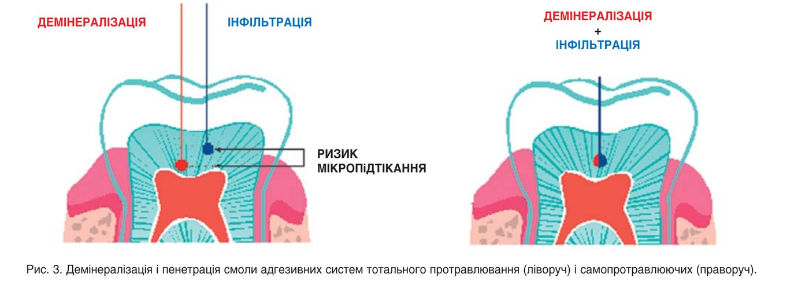
Демінералізація змащеного шару і дентину в самопротравлюючих АС здійснюється за рахунок слабокислих праймерів, які входять до їх складу. Висока кислотність цих АС, зумовлена вмістом кислих праймуюючих елементів, знижується за рахунок буферної ємності твердих тканин, випаровування під час роздування і запечатування в смолі у процесі полімеризації.
Однак і самопротравлюючі АС не позбавлені недоліків. Кислотності їх слабокислих праймерів недостатньо для потрібного ступеня демінералізації емалі і склерозованого дентину. Недостатня адгезія до емалі незабаром призводить до порушення крайової цілісності і виникнення забарвлювання по межі реставрації. Також ці адгезивні системи не можна використовувати для фіксації непрямих реставрацій і скловолоконних штифтів (докладний протокол установлення скловолоконних штифтів ми описали у статті «Сучасні адгезивні системи: від класифікації до особливостей застосування»9). В інших ситуаціях самопротравлюючі АС утворюють досить міцний гібридний шар без пустот чи недостатньої інфільтрації демінералізованого колагену.
Перераховані вище недоліки призвели до того, що багато лікарів відмовилися від використання самопротравлюючих АС, а вони все-таки мають досить широкий спектр показань:
- Реставрації тимчасових зубів і зубів з незрілою емаллю.
- Герметизація фісур.
- Циркулярний (агресивний) карієс.
- Пломбування пришийкових порожнин (коли приясенна стінка розташована субгінгівально і є високий ризик виникнення ясенної кровотечі).
- Pre-build-up (відновлення відсутньої стінки зуба перед ендодонтичним лікуванням).
- IDS (негайне запечатування дентину після препарування вітальних зубів під непрямі реставрації).
З огляду на недоліки і переваги АС тотального протравлювання і самопротравлюючих, а також їх велику кількість на стоматологічному ринку і складність вибору, виробники розробили універсальні АС, які можуть застосовуватися в будь-якій техніці адгезивної підготовки: тотального протравлювання, самопротравлювання або селективного протравлювання.
Універсальні адгезивні системи
Першим представником універсальної АС компанії Dentsply Sirona була АС Prime&Bond One Select. Вибір техніки адгезивної підготовки залежить від початкової клінічної ситуації та вподобань лікаря-стоматолога, але є рекомендації (рис. 4).
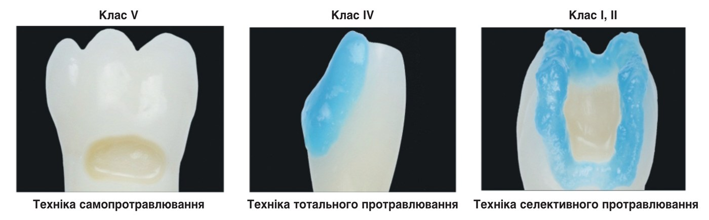
У тих клінічних ситуаціях, коли існує ймовірність ясенної кровотечі, наприклад у пришийкових порожнинах з розташуванням приясенної стінки нижче рівня ясенного краю, використання техніки самопротравлювання дозволить його уникнути (фото 9). Показання для використання самопротравлюючих АС також є показаннями для використання універсальних АС у техніці самопротравлювання.
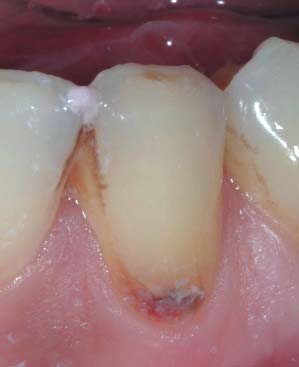
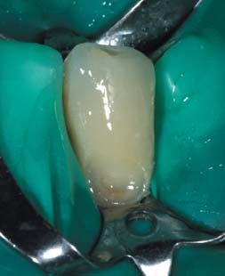
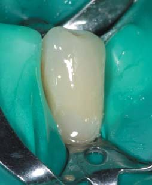
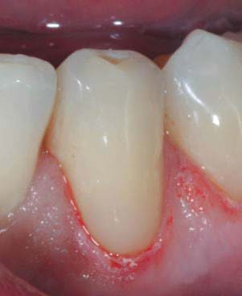
У ситуаціях, коли реставрації будуть зазнавати екстремальних навантажень (як правило, при реставрації передніх зубів) або коли дефект локалізується переважно в емалі, доцільно застосувати техніку тотального протравлювання, у такому випадку сила зчеплення з твердими тканинами становитиме 35-45 МПа (фото 10).
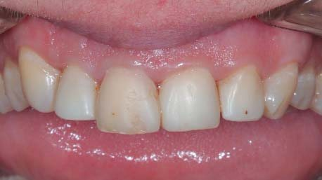
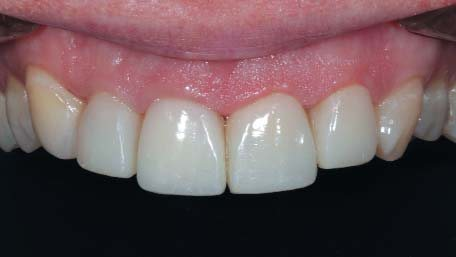
Селективне протравлювання рекомендується застосовувати, коли реставрації будуть досить сильно навантажені і в той же час існує високий ризик виникнення післяопераційної чутливості (порожнини класів I і II за Блеком). Суть техніки полягає у протравлюванні лише емалі протягом 15-20 секунд і відсутності протравлювання дентину. Після змивання ортофосфорної кислоти і висушування твердих тканин АС слід нанести на емаль та дентин і провести її втирання протягом 20 секунд. Після випаровування розчинника і стоншення адгезивного шару за допомогою струменя повітря провадиться полімеризація. Ця техніка не чутлива до ступеня вологості дентину і повністю унеможливлює виникнення післяопераційної чутливості (фото 11).
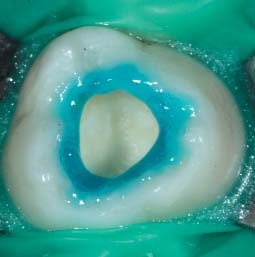
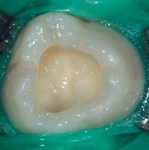
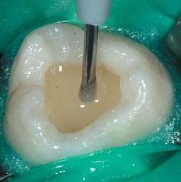
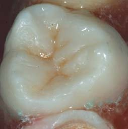
Універсальна АС Prime&Bond One Select зарекомендувала себе на ринку лише з позитивного боку. Однак вона мала один недолік – неможливість використання для фіксації скловолоконних штифтів і непрямих реставрацій, оскільки несумісна з активатором хімічної полімеризації (SCA), як і самопротравлюючі АС.
Нова адгезивна система Prime&Bond Universal
Нова універсальна АС Prime&Bond Universal (фото 12) позбавлена цього недоліку. Її можна використовувати і для фіксації непрямих реставрацій, і для встановлення скловолоконних штифтів. При цьому є варіанти встановлення як з використанням активатора хімічної полімеризації (SCA), так і без нього.
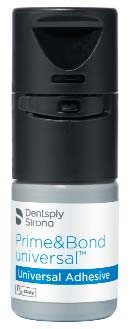
Адгезивна система Prime&Bond Universal дозволяє робити фіксацію непрямих керамічних реставрацій за допомогою Calibra Сeram (композитний цемент подвійного затвердіння) без активатора хімічної полімеризації. Однак перед внесенням композитного цементу Calibra Сeram АС слід ОБОВ’ЯЗКОВО заполімеризувати. Товщина адгезивної плівки, яку створює Prime&Bond Universal, становить всього-на-всього 7 мкм, що дозволяє фіксувати керамічні реставрації без напруги і порушення оклюзійних співвідношень. При використанні інших композитних цементів подвійного затвердіння обов’язкове використання SCA у строгій відповідності з інструкцією із застосування.
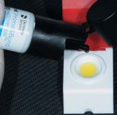
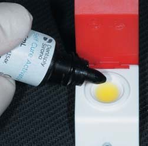
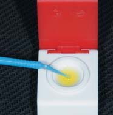
Можливість використання Prime&Bond Universal для фіксації непрямих реставрацій – не єдина її перевага. Ця АС включає воду та ізопропанол як розчинники, PENTA, мономер MDP (замість гідрофобних метакрилатів HEMA, TEGDMA та ін.) і камфорохінон як фотоініціатор. Саме наявність мономера MDP дозволяє цій АС не бути чутливою до ступеня вологості дентину в техніці тотального протравлювання – вона працює і на надмірно зволоженому дентині, і на помірно вологому, і на пересушеному (фото 5), при цьому утворюється рівномірний гібридний шар з мінімальною ймовірністю виникнення післяопераційної чутливості. Ця властивість отримала назву «активний контроль вологості».
При першому ж відкритті флакона і нанесенні АС на поверхню зуба впадає в око її висока текучість, що дозволяє проникати у важкодоступні місця відпрепарованої порожнини, наприклад, у місцях прилягання контурної матриці до твердих тканин – приясенна, вестибулярна і оральна стінки. Це явище називається властивістю саморозподілу або самоадаптації (фото 14).
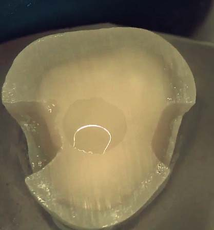
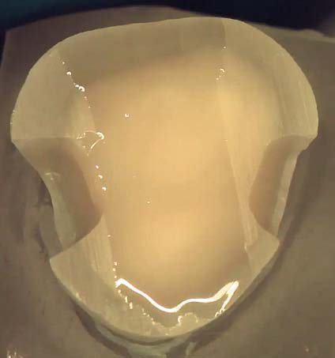
У процесі випаровування розчинника адгезивної системи за допомогою потоку повітря з пістолета в АС можуть утворюватися включення бульбашок повітря, це може позначатися на міцності адгезивного шару (фото 15 а). В АС Prime&Bond Universal таке явище усунено, і стоншення адгезивного шару здійснюється набагато легше за допомогою дуже слабкого потоку повітря. Адгезивний шар при цьому має вигляд набагато більш гомогенного (властивість самовирівнювання) (фото 15 б).
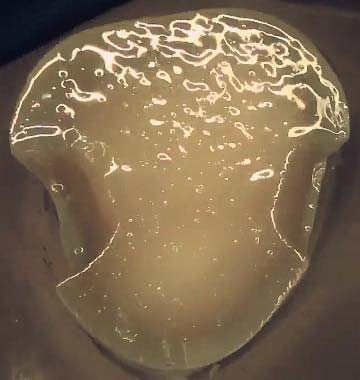
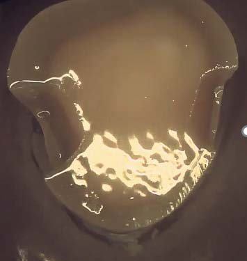
Для профілактики витікання АС з носика пляшечки і скупчення її під кришкою при внесенні АС в ClixDish рекомендується тримати флакон вертикально (фото 16).
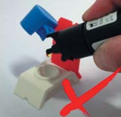
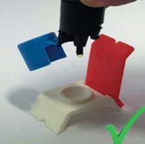
І на закінчення ...
Адгезивні системи з моменту появи у практиці стоматологів до сьогодні зазнали істотних змін. З плином часу змінювалося ставлення до змазаного шару, який утворюється в дентині і на його поверхні після препарування твердих тканин. Одні адгезивні системи вимагають його повного видалення для утворення якісного гібридного шару, для інших він є субстратом для адгезії. Стоматологові для вибору тієї чи іншої адгезивної системи слід враховувати багато чинників – генерацію зубів (тимчасові чи постійні), вікові особливості пацієнтів, локалізацію, характер дефектів і т. д. Склад і генерація адгезивної системи (тотального протравлювання чи самопротравлюючі) зумовлюють особливості їх застосування, які слід враховувати під час адгезивної підготовки.
Вектор розвитку адгезивної стоматології спрямований у бік зменшення кількості етапів і, як наслідок, зменшення помилок та ускладнень при реставрації зубів. Відтак на ринку з’явилися універсальні адгезивні системи, які дозволяють працювати в різних техніках – тотального протравлювання, самопротравлювання, селективного протравлювання. Яскравим представником таких адгезивних систем є Prime&Bond Universal, вона також може використовуватися для виготовлення прямих і непрямих реставрацій зубів. Активний контроль вологи, самоадаптація і самовирівнювання значно полегшують адгезивну підготовку, при цьому підвищують надійність адгезивного з’єднання і сприяють зменшенню кількості післяопераційних ускладнень. Товщина адгезивного шару 7 мкм мінімізує виникнення оклюзійних похибок та крайового забарвлювання по межі реставрацій. Наявність лише однієї АС в арсеналі лікаря полегшує вибір і зменшує кількість можливих помилок.
Статтю надала компанія Дентсплай Сірона
Література
- Блунк У. Адгезивные системы: обзор и сравнение / У. Блунк // ДентАрт. – 2003. – № 3. – С. 25-30.
- Борисенко А. В. Современные адгезивные системы: новый подход к их классификации / А. В. Борисенко // Дентальные технологии. – 2002. – № 6. – С. 3-5.
- Горбань С. Современные адгезивные системы. «SELFETCH PRIMER» техника / С. А. Горбань, Н. В. Михалева, С. В. Хлебас [и др.] // Современная стоматология. – 2007. – № 3. – С. 15-19.
- Грютцнер А. Ксено V – однокомпонентный самопротравливающий адгезив. Клинические исследования / Андреас Грютцнер // ДентАрт. – 2008. – № 3. – С. 41-47.
- Лобовкина Л. А. Особенности применения современных самопротравливающих адгезивных систем / Л. А. Лобовкина, А. М. Романов // Институт стоматологии. – 2008. – № 1. – С. 132-133.
- Латта Марк А. Клинический взгляд на современные стоматологические адгезивы / Марк А. Латта // ДентАрт. – 2008. – № 4. – С. 41-51.
- Макеева И. И. Биомеханика соединения твёрдых тканей зуба с пломбировочными материалами / И. И. Макеева, А. Ю. Туркина, В. В. Загорский // Институт стоматологии. – 2014. – № 1 (62). – С. 114-116.
- Маргвелашвили М. Стоматологические адгезивные системы: перевод науки. / М. Маргвелашвили, М. Каландадзе, А. Вики [и др.] // ДентАрт. – 2014. – № 1. – С. 30-36.
- Попов Р. Современные адгезивные системы: от классификации до особенностей применения / Р. Попов // ДентАрт. – 2016. – № 2. – С. 52-64.
- Радлинский С. Конструкция реставрированного зуба и адгезивный слой / С. Радлинский // ДентАрт. – 2007. – № 1. – С. 40-48.
- Саккас Х. Эволюция дентинных бондинговых систем. Часть II. Микромеханическая ретенция / Х. Саккас // Современная стоматология. – 2007. – № 1. – С. 22-27.
- Саккас Х. Кислотное протравливание эмали (пришеечная область) постоянных зубов у детей и взрослых: сравнительный анализ. Часть 3 / Х. Саккас, Л. A. Хоменко, Н. В. Биденко // www.medexpert.org.ua
- Суржанский С. К. Современные представления об адгезивных системах / С. К. Суржанский, А. В. Азаров // Архив клинической и экспериментальной медицины. – 2005. – Т. 14, № 1. – С. 23-24.
- Суржанский С. К. Экспериментально-клиническое обоснование применения ацетоносодержащих и этанолсодержащих адгезивных систем при реставрации зубов в разных возрастных группах / С. К. Суржанский, А. В. Азаров, Г. Ю. Агафонова [и др.] // Таврический медико-биологический вестник. – 2004. – Т. 7, № 2. – С. 214-216.
- Hurmuzlu F., Ozdemir A.K., Hubbezoglu [and other]. Bond strength of adhesive to dentin involving total and self-etch adhesives // Quintessence Int. – 2007. – №4. – Р. 12.
- Luque-Martinez I.; Perdigao J.; Munoz M. A.; Sezinando, A.; Reis A.; Loguercio, A. D. Effects of solvent evaporation time on immediate adhesive properties of universal adhesives to dentin, Dent Mater 30 (10), 1126-1135 (2014).
- Munoz M. A.; Luque, I.; Hass V.; Reis, A.; Loguercio A. D.; Bombarda N. H. C. Immediate bonding properties of universal adhesives to dentine, J Dent 41 (5), 404-411 (2013).
- Pashley Devid H. Развитие дентинного бондинга: от «без протравливания» через «общее протравливание» к «самопротравливанию» / Devid H. Pashley // Новое в стоматологии. – 2008. – № 4. – С. 2-19.
- Rosa W. L. O.; Piva E.; Silva A. F. Bond strength of universal adhesives: A systematic review and meta-analysis, J Dent 43 (7), 765-776 (2015).
- Shafiei F., Safarpoor I., Moradmand M. [and other]. Effect of light activation mode on the incompatibility between one-bottle adhesives and light-cured composites: an in vitro shear bond strength study // Oper. Dent. – 2009. – №5. – Р. 64.
- Takamizawa T.; Barkmeier W.W.; Tsujimoto A.; Berry T.P.; Watanabe H.; Erickson R. L.; Latta M. A.; Miyazaki M. Influence of different etching modes on bond strength and fatigue strength to dentin using universal adhesive systems, Dent Mater 32 (2), 9-21 (2016).
- Tian F.; Zhou L.; Zhang Z.; Niu L.; Zhang L.; Chen C.; Zhou J.; Yang H.; Wang X.; Fu B.; Huang, C.; Pashley D.H.; Tay F.R. Paucity of nanolayering in resin-dentin interfaces of MDP-based adhesives, J Dent Res 95 (4), 380-387 (2016).
- Yokota Y.; Nishiyama N. Determination of molecular species of calcium salts of MDP produced through decalcification of enamel and dentin by MDP-based one-step adhesive, Dent Mater J 34 (2), 270-1279 (2015).
- Wagner A.; Wendler M.; Petschelt A.; Belli R.; Lohbauer U. Bonding performance of universal adhesives in different etching modes, J Dent 42 (7), 800-807 (2014).